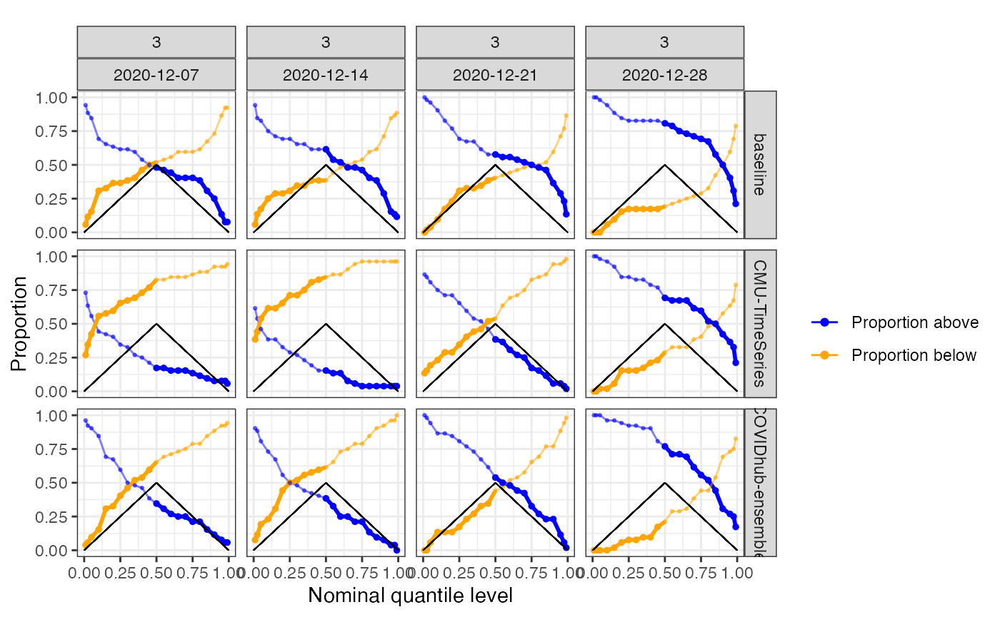
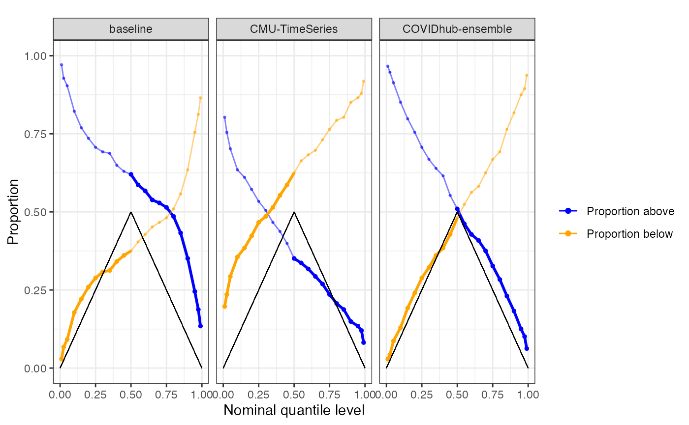
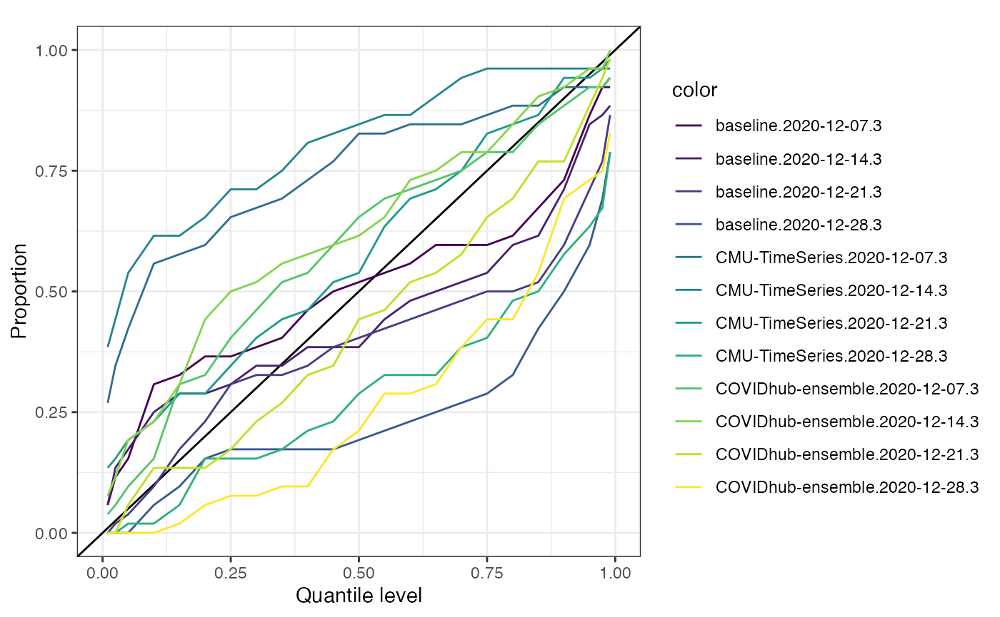
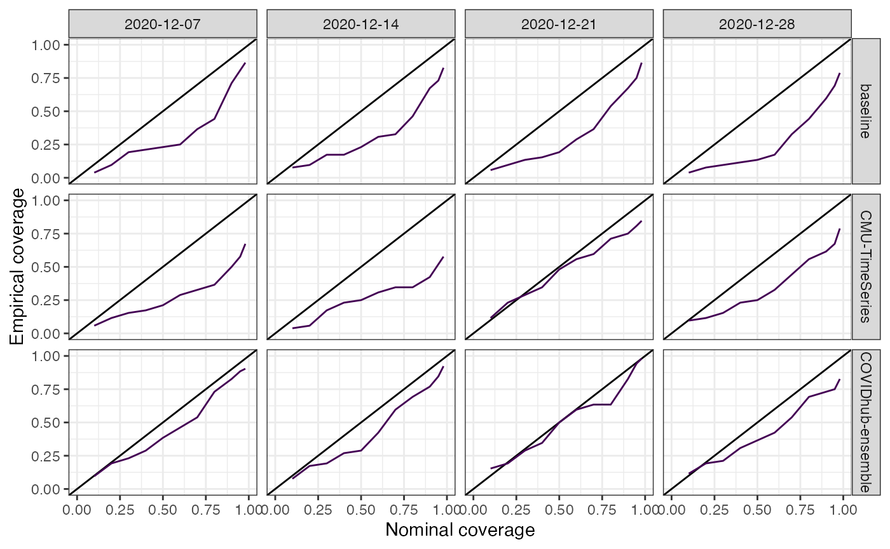
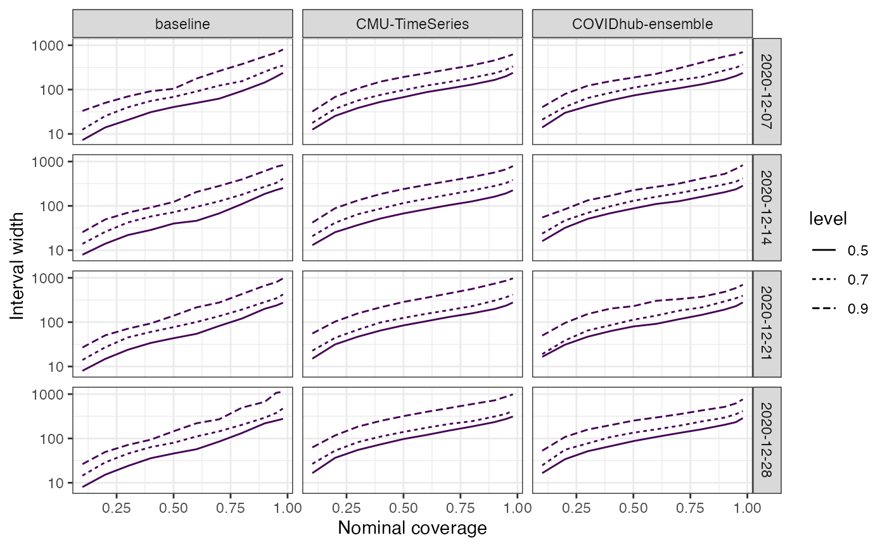
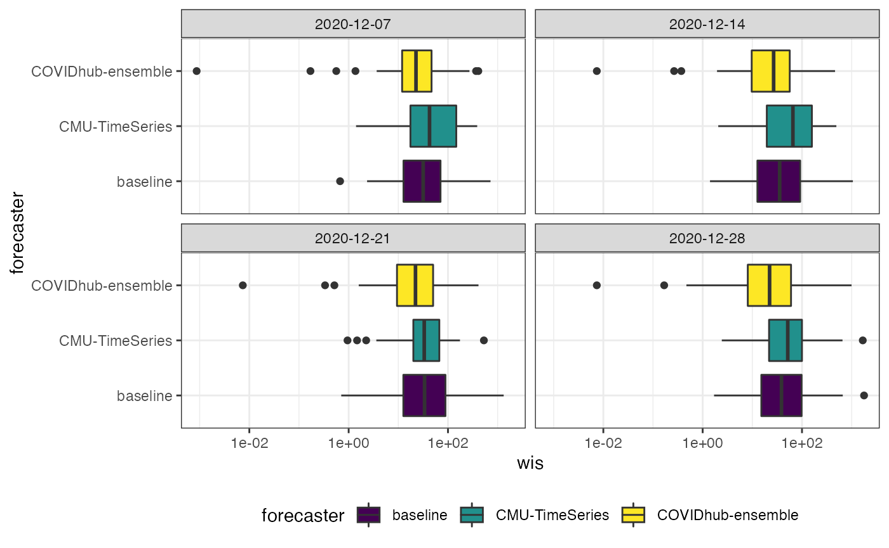

The evalcast package provides the infrastructure for developing and evaluating probabilistic forecasters that are based on data obtained with the covidcast R package. A unique feature of the covidcast API is that it can retrieve data that would have been available as of a certain date. This accounts for a difficult property of working with certain COVID-19 data sources, which is that they may be backfilled (retrospectively updated). Failing to account for backfill can lead to poorly trained forecasters and overly optimistic retrospective evaluations. The evalcast package is designed to help forecasters avoid these pitfalls.
We will use the included baseline_forecaster to demonstrate how to backtest a forecaster and compare its predictions to contemporaneous forecasts that were submitted to CovidHub. While baseline_forecaster is very simple, it can be used as a template for creating more sophisticated forecasters.
The format of a forecaster is aligned with the CovidHub submission instructions and with the covidcast R package.
We start by specifying which signals the forecaster will be using. See here for a full list of signals available through the covidcast API. Each signal is specified by two strings: data_source and signal. Optionally, we can specify how far back in time we will want data.
library(tibble)
library(dplyr)
library(magrittr)
library(ggplot2)
signals <- tibble(data_source = "jhu-csse",
signal = "deaths_incidence_num",
start_day = "2020-06-15",
geo_type = "state")
signals
#> # A tibble: 1 x 4
#> data_source signal start_day geo_type
#> <chr> <chr> <chr> <chr>
#> 1 jhu-csse deaths_incidence_num 2020-06-15 stateWithin the evalcast framework, forecasters do not directly retrieve historic data. Instead, get_predictions provides only the data that would have been available at the time to the specified forecaster in order to generate retrospective predictions.
library(evalcast)
library(covidcast)
library(lubridate)
library(dplyr)
forecast_dates <- get_covidhub_forecast_dates("CMU-TimeSeries")
forecast_dates_dec <- forecast_dates[forecast_dates >= "2020-12-01" &
forecast_dates <= "2020-12-31"]
# Retrieve past predictions from CovidHub...
predictions_cards_ens <- get_covidhub_predictions(
"COVIDhub-ensemble", as_date(forecast_dates_dec), ahead = 3,
signal = "deaths_incidence_num") %>%
filter(nchar(geo_value)==2) # remove counties
predictions_cards_cmu <- get_covidhub_predictions(
"CMU-TimeSeries", forecast_dates_dec, ahead = 3,
signal = "deaths_incidence_num")
# ...or make new predictions using baseline_forecaster
predictions_cards <- get_predictions(baseline_forecaster,
name_of_forecaster = "baseline",
signals = signals,
forecast_dates = forecast_dates_dec,
incidence_period = "epiweek",
forecaster_args = list(
ahead = 3
)
)
predictions <- bind_rows(predictions_cards, predictions_cards_cmu,
predictions_cards_ens)get_predictions() and get_covidhub_predictions() return a long data frame with one row for each (forecast date, ahead, geo_value, quantile) combination.
head(predictions_cards_cmu, n=25)
#> ahead geo_value quantile value forecaster forecast_date data_source
#> 1 3 al 0.010 148 CMU-TimeSeries 2020-12-28 jhu-csse
#> 2 3 al 0.025 184 CMU-TimeSeries 2020-12-28 jhu-csse
#> 3 3 al 0.050 213 CMU-TimeSeries 2020-12-28 jhu-csse
#> 4 3 al 0.100 237 CMU-TimeSeries 2020-12-28 jhu-csse
#> 5 3 al 0.150 253 CMU-TimeSeries 2020-12-28 jhu-csse
#> 6 3 al 0.200 271 CMU-TimeSeries 2020-12-28 jhu-csse
#> 7 3 al 0.250 283 CMU-TimeSeries 2020-12-28 jhu-csse
#> 8 3 al 0.300 296 CMU-TimeSeries 2020-12-28 jhu-csse
#> 9 3 al 0.350 307 CMU-TimeSeries 2020-12-28 jhu-csse
#> 10 3 al 0.400 320 CMU-TimeSeries 2020-12-28 jhu-csse
#> 11 3 al 0.450 328 CMU-TimeSeries 2020-12-28 jhu-csse
#> 12 3 al 0.500 339 CMU-TimeSeries 2020-12-28 jhu-csse
#> 13 3 al 0.550 351 CMU-TimeSeries 2020-12-28 jhu-csse
#> 14 3 al 0.600 359 CMU-TimeSeries 2020-12-28 jhu-csse
#> 15 3 al 0.650 370 CMU-TimeSeries 2020-12-28 jhu-csse
#> 16 3 al 0.700 381 CMU-TimeSeries 2020-12-28 jhu-csse
#> 17 3 al 0.750 395 CMU-TimeSeries 2020-12-28 jhu-csse
#> 18 3 al 0.800 410 CMU-TimeSeries 2020-12-28 jhu-csse
#> 19 3 al 0.850 424 CMU-TimeSeries 2020-12-28 jhu-csse
#> 20 3 al 0.900 443 CMU-TimeSeries 2020-12-28 jhu-csse
#> 21 3 al 0.950 477 CMU-TimeSeries 2020-12-28 jhu-csse
#> 22 3 al 0.975 506 CMU-TimeSeries 2020-12-28 jhu-csse
#> 23 3 al 0.990 540 CMU-TimeSeries 2020-12-28 jhu-csse
#> 24 3 ak 0.010 0 CMU-TimeSeries 2020-12-28 jhu-csse
#> 25 3 ak 0.025 0 CMU-TimeSeries 2020-12-28 jhu-csse
#> signal target_end_date incidence_period
#> 1 deaths_incidence_num 2021-01-16 epiweek
#> 2 deaths_incidence_num 2021-01-16 epiweek
#> 3 deaths_incidence_num 2021-01-16 epiweek
#> 4 deaths_incidence_num 2021-01-16 epiweek
#> 5 deaths_incidence_num 2021-01-16 epiweek
#> 6 deaths_incidence_num 2021-01-16 epiweek
#> 7 deaths_incidence_num 2021-01-16 epiweek
#> 8 deaths_incidence_num 2021-01-16 epiweek
#> 9 deaths_incidence_num 2021-01-16 epiweek
#> 10 deaths_incidence_num 2021-01-16 epiweek
#> 11 deaths_incidence_num 2021-01-16 epiweek
#> 12 deaths_incidence_num 2021-01-16 epiweek
#> 13 deaths_incidence_num 2021-01-16 epiweek
#> 14 deaths_incidence_num 2021-01-16 epiweek
#> 15 deaths_incidence_num 2021-01-16 epiweek
#> 16 deaths_incidence_num 2021-01-16 epiweek
#> 17 deaths_incidence_num 2021-01-16 epiweek
#> 18 deaths_incidence_num 2021-01-16 epiweek
#> 19 deaths_incidence_num 2021-01-16 epiweek
#> 20 deaths_incidence_num 2021-01-16 epiweek
#> 21 deaths_incidence_num 2021-01-16 epiweek
#> 22 deaths_incidence_num 2021-01-16 epiweek
#> 23 deaths_incidence_num 2021-01-16 epiweek
#> 24 deaths_incidence_num 2021-01-16 epiweek
#> 25 deaths_incidence_num 2021-01-16 epiweekLet’s look at one location:
michigan_abr = tolower(covidcast::name_to_abbr("Michigan")) # = "mi"
predictions_cards_cmu %>%
filter(geo_value == michigan_abr, forecast_date == forecast_dates_dec[1]) %>%
select(geo_value, quantile, value, forecast_date)
#> geo_value quantile value forecast_date
#> 1 mi 0.010 370 2020-12-07
#> 2 mi 0.025 465 2020-12-07
#> 3 mi 0.050 537 2020-12-07
#> 4 mi 0.100 650 2020-12-07
#> 5 mi 0.150 721 2020-12-07
#> 6 mi 0.200 785 2020-12-07
#> 7 mi 0.250 840 2020-12-07
#> 8 mi 0.300 884 2020-12-07
#> 9 mi 0.350 919 2020-12-07
#> 10 mi 0.400 951 2020-12-07
#> 11 mi 0.450 985 2020-12-07
#> 12 mi 0.500 1022 2020-12-07
#> 13 mi 0.550 1054 2020-12-07
#> 14 mi 0.600 1085 2020-12-07
#> 15 mi 0.650 1117 2020-12-07
#> 16 mi 0.700 1159 2020-12-07
#> 17 mi 0.750 1204 2020-12-07
#> 18 mi 0.800 1248 2020-12-07
#> 19 mi 0.850 1300 2020-12-07
#> 20 mi 0.900 1363 2020-12-07
#> 21 mi 0.950 1460 2020-12-07
#> 22 mi 0.975 1545 2020-12-07
#> 23 mi 0.990 1656 2020-12-07
#> 24 mi NA 1022 2020-12-07Forecasts are generally probabilistic, meaning that they predict a likely distribution of values (defined by quantiles) instead of a single value. For example, on 2020-12-28 the Covidhub ensemble forecaster made the following prediction for how many cases there would be in California 3 week(s) later.
california_abr = tolower(covidcast::name_to_abbr("California")) # = "ca"
predictions_cards_ens %>%
filter(geo_value == california_abr,
forecast_date == forecast_dates_dec[1]) %>%
select(quantile, value)
#> quantile value
#> 1 0.010 742
#> 2 0.025 787
#> 3 0.050 826
#> 4 0.100 905
#> 5 0.150 935
#> 6 0.200 970
#> 7 0.250 1030
#> 8 0.300 1051
#> 9 0.350 1054
#> 10 0.400 1059
#> 11 0.450 1066
#> 12 0.500 1141
#> 13 0.550 1164
#> 14 0.600 1187
#> 15 0.650 1212
#> 16 0.700 1238
#> 17 0.750 1265
#> 18 0.800 1298
#> 19 0.850 1336
#> 20 0.900 1389
#> 21 0.950 1411
#> 22 0.975 1478
#> 23 0.990 1520
#> 24 NA 1141An NA in the quantile column indicates a point forecast (typically the median or mean).
Now that we’ve made these predictions, we’d like to know how well they perform. By default, evalcast uses the following three performance measures, but these can be easily substituted:
err_measures <- list(wis = weighted_interval_score,
ae = absolute_error,
coverage_80 = interval_coverage(coverage = 0.8))We may now create scorecards for each forecaster’s predictions or for a filtered subset.
scorecards <- evaluate_covid_predictions(
predictions,
err_measures = err_measures,
backfill_buffer = 10,
geo_type = "state"
)evaluate_covid_predictions() returns a long data frame with one column for each error measure added to the predictions_cards and the quantile and value columns removed and one row for each geo_value/ahead/forecast_date/forecaster combination. If quantile predictions are needed for plotting or other downstream analysis, then use the predictions_cards.
scorecards %>% str()
#> score_cards [644 × 12] (S3: score_cards/tbl_df/tbl/data.frame)
#> $ ahead : int [1:644] 3 3 3 3 3 3 3 3 3 3 ...
#> $ geo_value : chr [1:644] "ak" "ak" "ak" "ak" ...
#> $ forecaster : chr [1:644] "baseline" "baseline" "baseline" "baseline" ...
#> $ forecast_date : Date[1:644], format: "2020-12-07" "2020-12-14" ...
#> $ data_source : chr [1:644] "jhu-csse" "jhu-csse" "jhu-csse" "jhu-csse" ...
#> $ signal : chr [1:644] "deaths_incidence_num" "deaths_incidence_num" "deaths_incidence_num" "deaths_incidence_num" ...
#> $ target_end_date : Date[1:644], format: "2020-12-26" "2021-01-02" ...
#> $ incidence_period: chr [1:644] "epiweek" "epiweek" "epiweek" "epiweek" ...
#> $ actual : num [1:644] 17 15 8 5 296 187 427 820 250 288 ...
#> $ wis : num [1:644] 2.351 12.203 0.978 7.633 13.185 ...
#> $ ae : num [1:644] 4 17 0 12 16 26 140 518 60 3 ...
#> $ coverage_80 : num [1:644] 1 0 1 0 1 1 0 0 0 1 ...Technical note: What does backfill_buffer = 10 do? When we evaluate a forecaster in backtesting we are assuming that we know what actually occurred. However, in light of backfill, we may not trust the data for some period of time. The argument backfill_buffer allows us to specify how many days until we believe that the data has “settled down” and is unlikely to be updated further. The choice of this argument will depend on the particular signal you are forecasting.
evalcast provides a number of tools to visually assess a forecaster (including comparisons with other forecasters).
We can examine forecaster calibration.
plot_calibration(predictions_cards = predictions,
geo_type = "state", type = "wedgeplot",
facet_rows = "forecaster",
facet_cols = c("ahead", "forecast_date"))
By default, the proportion is the number of geo_values that fall above/below the quantile at each forecast date and ahead, but the grouping and variables to average over can be specified.
plot_calibration(predictions_cards = predictions,
geo_type = "state",
grp_vars = "forecaster",
facet_cols = "forecaster",
avg_vars = c("geo_value", "forecast_date"),
facet_rows = NULL)
We can also examine a more traditional calibration plot:
plot_calibration(predictions_cards = predictions, geo_type = "state", type = "traditional")
For extra flexibility, you can perform the core calculations using something like:
compute_calibration(predictions, geo_type = "state") %>% setup_wedgeplot()We can display the coverage of the interval forecasts:
plot_coverage(predictions_cards = predictions,
geo_type = "state") + theme(legend.position = "none")
Or the width of the intervals:
plot_width(predictions_cards = predictions) + scale_y_log10() +
guides(color = "none") 
Because score_cards are just long data frames, custom plots can also be created by using {ggplot2}:
scorecards %>% filter(geo_value != "us") %>%
ggplot(aes(y=forecaster, x=wis, fill=forecaster)) +
geom_boxplot() +
facet_wrap(~forecast_date) +
scale_x_log10() +
theme_bw() +
scale_fill_viridis_d() +
theme(legend.position = "bottom")
While the above describes incident forecasting, the same evalcast functions can also be used for cumulative forecasting.
For example, for k-day-ahead cumulative forecasting, choose a cumulative signal from covidcast (e.g., deaths_cumulative_num), set incidence_period = "day" and ahead = k.
For example, for k-week-ahead cumulative epiweek forecasting, do the same as above but with ahead = 7 * k.